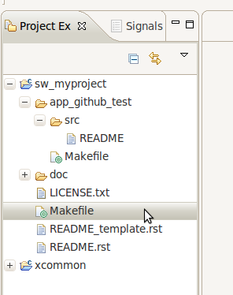

XCore/Github Howto (11.2.x tools)¶
This howto shows how to use the Xcore open source code repositories. It assume you have already installed the XMOS Development tools and have used the Xmos Development Environment (XDE).
To use code from the Xcore github repositories you need to:
- Get the xcommon build system
- Create a suitable project to store your code
- Get some repository code
- Get coding!
Get the xcommon build system¶
First you need to install the latest version of the xcommon build system. You can get it from:
Then import the system into the XDE (instructions are here).
Create a suitable project to build code¶
Once xcommon is installed, you need to create a project to build your code in. To use the Github shared code system you need to create a project that is slightly different to the normal XDE based projects.
The first thing you need to do is get and import the latest version of xcore_template - this is a template that you can rename to make a new project of your own. You can get the latest template here:
Once this is imported you should have a project workspace that looks something like this:

You can now adapt the project to your use:
Right-click on the xcore_template to something else (by convention application projects have the prefix sw_ e.g. sw_myproject).
Tip
Projects in this style can contain several elements: app_ directories that contain code that build to executables and module_ directories that contain code modules to use in several apps.
Initially, you will not need to code your own module so delete the module_template directory (right-click > Delete).
Rename the app_template directory to app_github_test or whatever your want your application to be called.
You should now have a workspace looking like this:
{kind=link}
So there is a project called sw_myproject that contains one application:: app_github_test. However, that application has no code in it. Let’s fix that:
Double-click on the Makefile within the app_github_test directory. The file will open in the editor pane of the XDE. This is the file that controls the building of your xapplication.
Edit the line that says TARGET = and replace it with:
TARGET = XK-1This tells the Makefile which board you are building your application for. You could use any XMOS development board name here.
Right-click on the src directory and choose New > Source File. Type main.xc as the name of the file. A new file should appear in the editor pane.
Add the following “Hello world” code to your file:
#include <print.h> int main() { printstrln("Hello World"); return 0; }Now click on menu item Project > Build Project. You should get a build log in the Console window that finishes with the Build Complete message.
You should now see a file called app_github_test.xe in the Binaries section of your project in the Project explorer:

Right-click on this binary and select Run As >XCore Application. Choose Simulator from the available devices and click on OK. You should now see the output of the program in the console window.
You now have a working project and application that is ready to use the component code available on github. At this point you can start /coding and testing your application as normal. The next section shows how to incorporate other peoples component code into your application.
Get some repository code¶
You can import other people code into your application by going to the repository index:
This lists all the XCore/Github open source projects. When you click on a project the index gives you some details on the repository and download links for the latest snapshot from the development branch or the latest tagged version.
Caution
Some repositories have dependencies. The details section of the repository in the index should list any other repositories you need to download.
Using the repository code¶
Let’s try and use some repository code:
- Download the lastest version of sc_uart and import it into the XDE.
To incorporate this into our application we need to update the build of our application to pull in the relevant code modules and then write code that uses the module.
We can see that the uart repository has two modules that can be used: module_uart_tx and module_uart_rx:

For this howto, we shall use module_uart_tx. Open up the application Makefile again and change the line that starts USED_MODULES = to:
USED_MODULES = module_uart_tx
This will incorporate all the source files from the module_uart_tx directory into the build of your application.
To use the code you need to look at the documentation for the repository and/or the header files in the module.
Replace code in main.xc with the following code:
#include <xs1.h> #include "uart_tx.h" port p = XS1_PORT_1J; void uart_test(chanend c_uart) { char message[] = "Hello World"; for (int i=0;i<sizeof(message);i++) uart_tx_send_byte(c_uart, message[i]); } #define BUFFER_SIZE 30 int main() { chan c_uart; char buffer[BUFFER_SIZE]; par { uart_tx(p, buffer, BUFFER_SIZE, 115200, 8, UART_TX_PARITY_NONE, 1, c_uart); uart_test(c_uart); } return 0; }Try rebuilding the application.
You should now see that the build output shows that you are building some extra files into your application.
Caution
The new program will not do anything on the simulator since it now has hardware interaction in.
The application outputs some characters over UART. The XK-1 has a uart wire connected to the XTAG-2 adapter which can be displayed on a PC. This is connected to port XS1_PORT_1J. To run the new binary on an XK-1:
- Plug in your XK-1 to your computer via he XTAG-2 adapter.
- Right-click on the app_github_test.xe and select Run As > Run Configurations....
- Select the hardware button and select the XTAG-2 adapter from the adapter drop down.
- Check the Run Uart Server box.
- Click on Apply and the click on Run
You should now see Hello World displayed in the console. This is the message that has been passed through the uart connection.